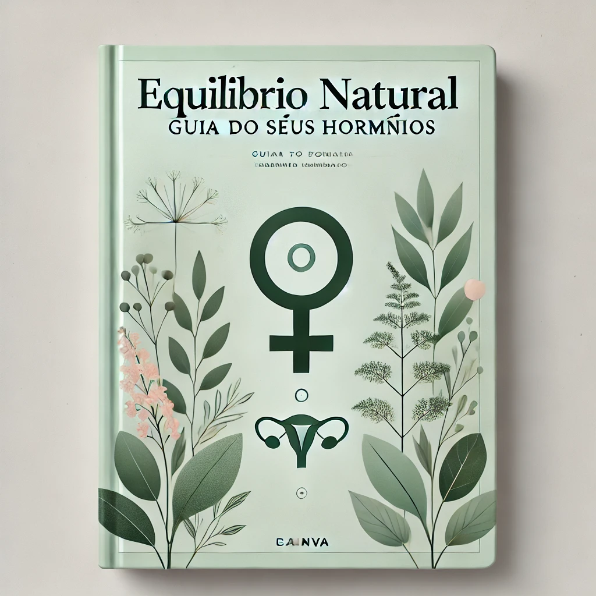

🌿 Conheça nossos eBooks
Nossos eBooks foram criados para facilitar sua jornada de autoconhecimento e equilÃbrio hormonal. Escritos com linguagem simples, baseados em ciência e experiências reais.

🧘‍♀️ EquilÃbrio Natural: Guia para seus hormônios
Descubra como cuidar dos seus hormônios com alimentação, plantas e rituais naturais.
📖 40 páginas | Acesso imediato | R$ XX
🔗 Comprar na Kiwify
🵠Plantas que Curam: Introdução à Fitoterapia Feminina
As principais ervas que ajudam no ciclo, TPM, libido e saúde uterina.
📖 30 páginas | Receita de chás e banhos incluÃda | R$ XX
🔗 Comprar na Kiwify🌙 Diário do Ciclo Feminino
Aprenda a acompanhar suas fases e desenvolver autocuidado cÃclico.
📖 20 páginas + espaço para escrever | R$ XX
🔗 Comprar na Kiwify